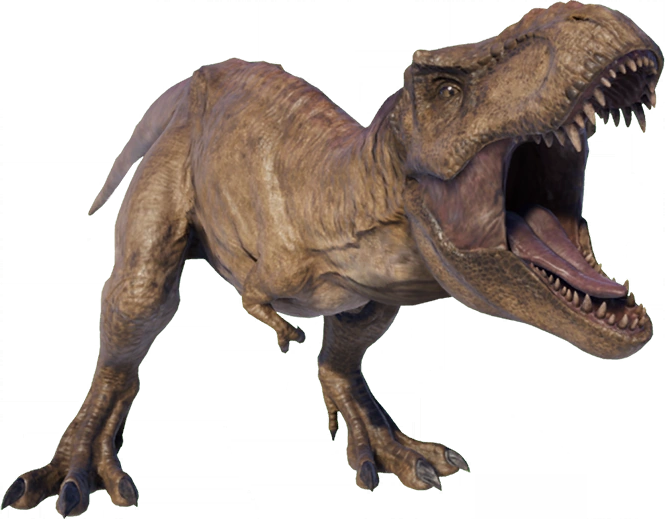

Despite not being the most well received film, Jurassic Park 3 is my personal favourite. Jurassic Park 3 also introduced the darker side of Ingen and introducing the origins of several dinosaurs featured in later films and series.
Plot
Four years have passed since the events of The Lost World: Jurassic Park. The public is aware of the existence of cloned dinosaurs on Isla Sorna, but humans are now prohibited from making contact with the island. Taking advantage of this an illegal boat-towed paragliding operation "Dino-Soar" has been set up to give "safe distance" coastal tours of the island. Young dinosaur enthusiast Eric Kirby (Trevor Morgan) and family friend Ben Hildebrand (Mark Harelik) decide to go parasailing. However, the boat is seemingly attacked by reptiles and left unmanned, heading towards a cluster of protruding rocks. Eric and Ben then detach the tow rope and drift towards Isla Sorna.
Meanwhile, Alan Grant and Ellie Sattler continue their paleontological careers but are now working independently; Ellie is married and has two children while Grant has furthered his digging career, now with a young protégé named Billy Brennan. Together they have made some interesting discoveries about raptors, even using a 3D printer to produce a replica of the creature's resonating chamber, equivalent to a voice box.
Grant is approached by Paul and Amanda Kirby, who claim to be wealthy thrill-seekers who want Grant to give them an aerial tour of Isla Sorna. Grant is very reluctant to begin with, but once the Kirbys propose a donation to fund his dig, he accepts.
Grant, Billy and the Kirbys fly to Isla Sorna by their own plane, with three mercenary associates: Cooper, Nash and Udesky. Grant realizes that the Kirbys try to land on the island and tries to stop them but is knocked unconscious by Cooper. Billy wakes Grant after the plane has landed, and they overhear Amanda shouting someone's name through a megaphone. Grant tells her to stop, but she persists. Her actions attract a Spinosaurus. A roar is then heard from the clustered verdancy and Billy thinks it's from a Tyrannosaurus but Alan, who of course have heard such from the actual beast before, deems it came from "something bigger". The mercenaries, who have entered the jungle to make sure the area is "safe", burst through the trees and urgently insist on leaving the island. Billy notes Cooper's absence, but Udesky urges him back into the plane. Cooper appears on the runway as the plane begins to take off, yelling for them to stop the plane. The Spinosaurus emerges from the undergrowth and devours Cooper as Nash is forced to make a premature takeoff.
Clipping the Spinosaur's sail, the fuel bunker gets cut off causing the plane, to fall right into the jungle where it crashes into the branches of trees. The survivors find themselves intact and immediately look for an escape, only to find that the Spinosaurus has followed them. The Spinosaurus decimates the plane and kills Nash before chasing the rest of the group. Escaping, the group briefly lose the Spinosaur only to encounter a Tyrannosaurus rex feeding on the carcass of a dead Parasaurolophus. Despite Grant telling the group to remain still, the others flee but manage to lure the Tyrannosaurus to the Spinosaurus. The ferocious fight between the two predators gives enough time for the group to escape and despite having the upper hand, the Tyrannosaurus is eventually overpowered when the Spinosaurus kills it by snapping its neck.
Grant demands the truth out of the Kirby couple and learns that they are a divorced middle-class couple looking for their son, Eric, who has been missing for eight weeks. The group finds a parasail with a camcorder and the skeletal remains of Ben's dead body. Amanda becomes horrified and traumatized when seeing the skeleton and runs away, but Paul intervenes on her behalf. Billy decides to take the parasail with him while the group next discovers a cluster of raptor eggs by a river.
After Billy has finished photographing the nest, the group enters a derelict InGen compound. While they explore the compound, a male Velociraptor attacks Amanda, but they manage to trap it. The group flees the building while the raptor calls for help, much to Alan's distress. The group runs into a herd of Parasaurolophus and Corythosaurus, causing a stampede. Grant picks up Billy's satchel that he dropped and becomes separated from Billy and the Kirbys. Udesky is also separated and runs into the jungle wherein more raptors await and attack him. The raptors use his crippled body as a trap to lure Billy and the Kirbys from the tree they climbed to hide. Amanda and Paul sense that Udesky is alive by his arm movements, and they descend the tree to help him. Billy senses the trap and when he tries to warn the Kirbys, Amanda slips and clings to a branch wherein two raptors scurry out of the bushes and leap towards Amanda, trying to pull her down. The raptors realize the failure of their trap wherein one kills Udesky by snapping his neck before departing to the call of one of their breed.
Meanwhile, Grant suspects that the raptors are searching for something while observing two of them communicating, for their zeal at pursuing the humans goes beyond mere predatory behavior, and is later ambushed by raptors. A jungle-camouflaged Eric throws tear gas to fend off the raptors and rescues Grant. They take shelter in an overturned supply truck wherein Eric reveals that he managed to survive by salvaging supplies and food from the InGen compound and used gas grenades to evade dinosaur attacks. The next day, Grant and Eric hear Paul's satellite phone ringing and are reunited with the Kirbys and Billy. Paul explains that he gave the phone to Nash before he was devoured. The reunion turns sour when the Spinosaur appears, as evidenced by the satellite phone ringing from inside the dinosaur. They manage to find shelter in an abandoned observatory and the dinosaur ends the pursuit. Grant discovers that Billy has stolen some raptor eggs, explaining the earlier attacks and new behavior, hunting the newly-arrived humans as though personal - and it was. One of the humans took from the raptors and the latter ruthlessly wants so back. When Billy explains that he did it with the "best intentions", Grant furiously tells him that "some of the worst things imaginable have been done with the best intentions" and declares that Billy was "no better than the people who built this place"; he decides to keep the eggs to ensure the group's survival, as the raptors would still kill them if they realize Alan's group do not have what they seek. At least by keeping the eggs with them for the time being, the humans will have some sort of leverage over the raptor pack.
The group must cross a bridge in order to access a canal boat docked in a nearby river. While walking the fog-engulfed bridge, Grant notices some excrement and realizes that they have entered a massive aviary where Pteranodons were housed. One of the species attacks Eric and takes him to its young. Using the paraglider he salvaged before, Billy rescues Eric from the species' nest and is attacked by several adults. He plunges into the river as they continue to attack him, seemingly killing him.
The group manages to board the canal boat on the river but inadvertently leaves the aviary doors unlocked. During the boat ride, they encounter some Parasaurolophus, Brachiosaurus, Stegosaurus, and Ankylosaurus grazing in a field. Grant marvels at the way they coexist with each other and their environment.
By nightfall, the group hears the phone's ringtone. They find mounds of Spinosaurus faeces containing the undigested bones and clothes of the mercenaries. As they retrieve the phone, a Ceratosaurus approaches but leaves the group unharmed. As they off down the river, Eric notices the fish in the water seem spooked. The Spinosaurus emerges from the water and capsizes the boat, tearing the engine open and spilling petrol oil into the river. Grant attempts to contact Ellie, but only manages to say "The river! Site B!" as the boat is submerged. They swim to the surface where Paul distracts the Spinosaurus by climbing a construction crane while Grant fires a flare gun, igniting the spilled petroleum and scaring the beast away for good.
The group is close to the shore when the raptors suddenly reappear, wanting their eggs back. The eggs are returned to the raptors, and using the raptor resonating chamber, Grant fakes a signal that momentarily confuses the carnivores, who retreat with their eggs when they hear the approach of some helicopters.
The group arrives at the beach to see a detachment of the United States Navy & Marine Corps, including two aircraft carriers, no doubt notified by Ellie and her husband. As they board a helicopter, Grant finds Billy is still alive, but seriously injured. As the helicopter heads towards an amphibious assault ship, the Pteranodons fly past (a scene similar to the pelicans in the first movie), apparently looking for new nesting grounds.
Species Included
- Ankylosaurus(New)

- Brachiosaurus
- Ceratosaurus(New)
- Compsognathus

- Corythosaurus(New)
- Parasaurolophus

- Pteranodon
- Spinosaurus(New)
- Stegosaurus

- Tyrannosaurus
- Triceratops

- Velociraptor

Trailer